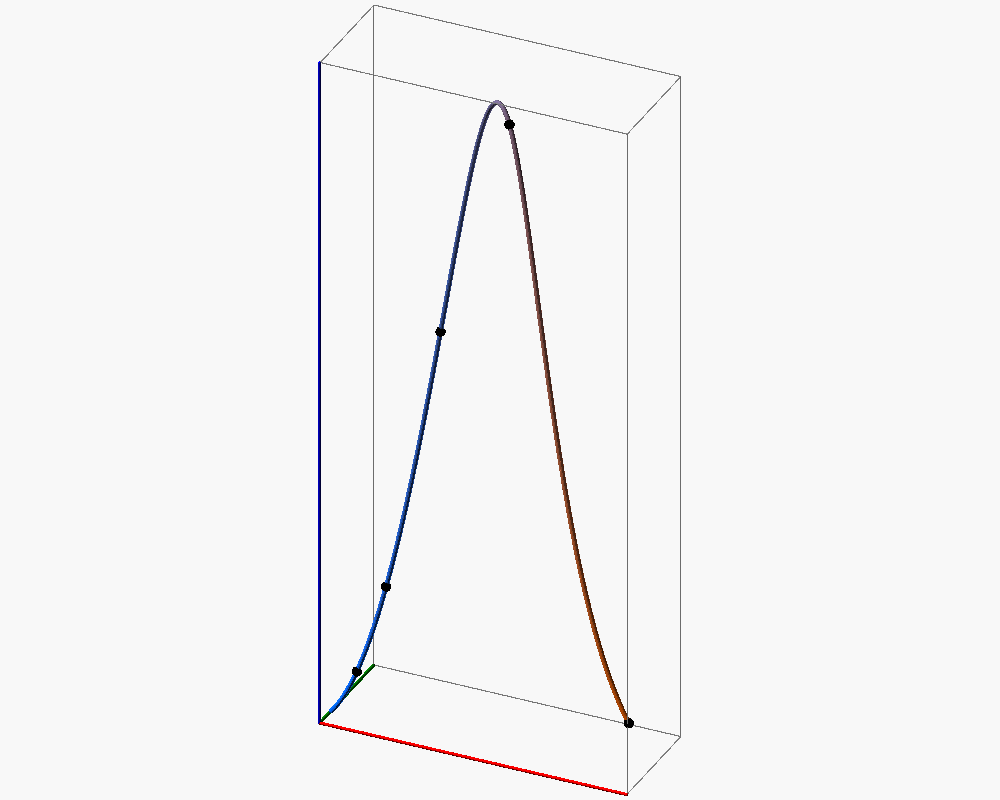
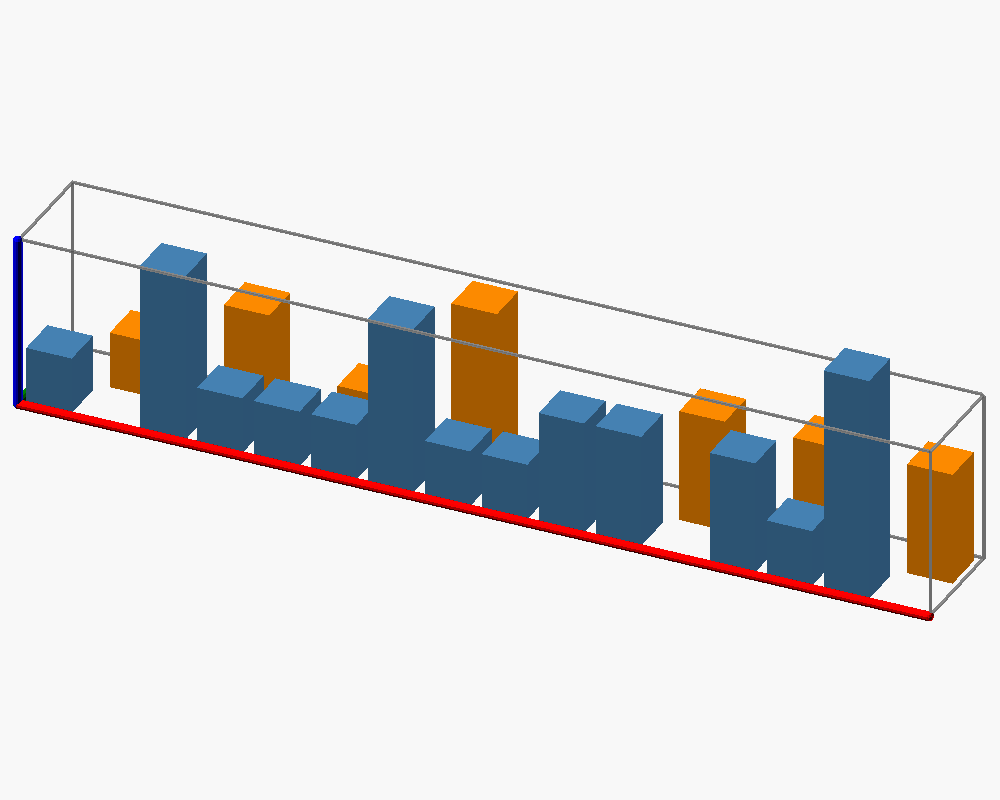

MODE = 0 for scene A, 1 for scene B) and its renders: A, B.




What you are looking at. A 3D Cartesian reference frame, orthographic, rotated by dragging: the OpenSCAD view of the same data. Scene A draws the n-ball in a coordinate system built from its own quantities: x = dimension n, y = volume V, z = area S, so every point of the curve lies on the surface z = n·y (faint lines). Scene B draws the Niemeier gap as bars: x = h mod 16, y = row (Niemeier root systems, Moonshine primes), z = how many.
How to read it. Drag to turn; wheel to zoom; the buttons give the canonical poses (front, top, right, iso); double-click resets. The gizmo in the corner is the frame: red x, green y, blue z. The scale cube is a bounding box with ticks. One orbit, no more: depth is read from the motion.
What it shows. Three dimensions are the whole budget of the frustum; the rest is colour. In A the colour is n; the peaks of V and S show as the highest points along y and z; the sedenion dimensions are marked. In B the empty first row at residues 1, 11, 15 is the gap, filled in the second row by Moonshine primes.
What it does not show. A claim about natural constants beyond what the axes already are: the frame is built from V, S and n, with no fitted number in it. It does not make the gap or the peak meaningful; it only places them in one frame.
Numbers to check. The same data is rendered by OpenSCAD in hypergon_frame.scad (MODE 0 and 1) with the PNGs beside it. Scene A: the curve starts at (0, 1, 0) and passes (2, π, 2π).